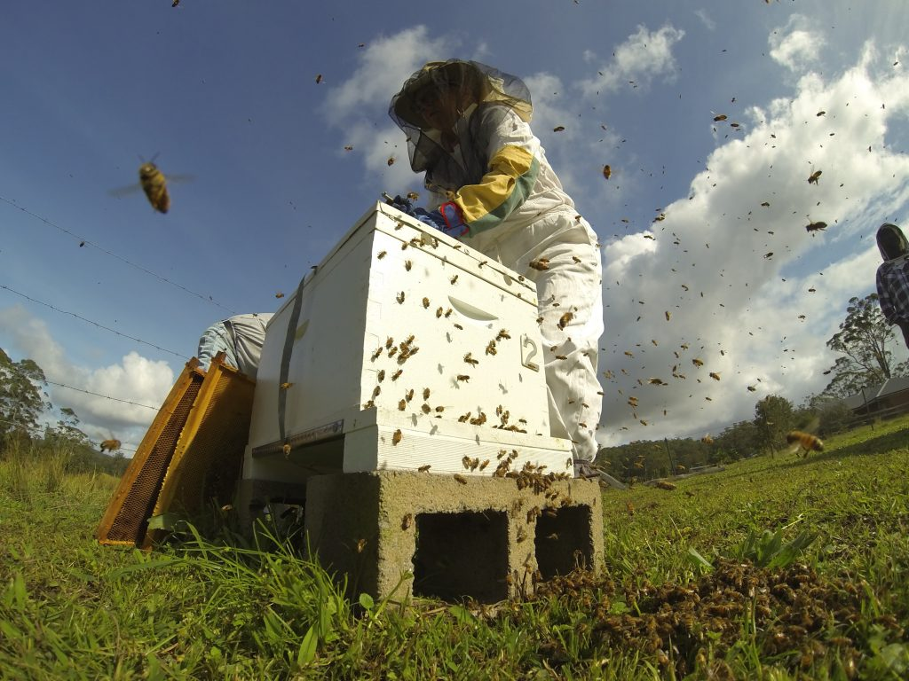

Infiintarea unei noi colonii nu se poate face numai cu ajutorul unei matci urmate de mai multe albine lucratoare si nici numai cu trantori.
Pentru aceasta este nevoie de o comunitate. Astfel incat, pe langa inmultirea individuala in cadrul coloniei, este necesara si inmultirea printr-o
colectivitate sau printr-o parte a coloniei. Aceasta a doua forma de inmultire si de extindere o numim roit. Inainte de aparitia tehnicilor de inmultire
artificiala, roitul era singura posibilitate de conservare si extindere a activitatilor albinelor.
De aceea, prin roit se inlocuiesc colonile moarte din cauza conditiilor de viata nefavorabile.
Varsta matcii coloniei este un alt factor care stimuleaza sau care impiedica roitul. Coloniile cu matci de 3 ani roiesc mai degraba decat acelea cu matci tinere,
de 1 an. Adeseori, roitul este provocat de schimbarea matcii. Roitul poate fi pus in relatie si cu experienta substantei de matca.
Aceasta exista in cantitati mai mici la matcile batrane decat la cele tinere, fertilizate.
Transmiterea necesara a substantei de matca
la membrii unei colonii nu mai este posibila in cazul suprapoularii sau a lipsei de ventilatie. Si supraincalzirea stupilor din cauza radiatiilor
solare stimuleaza roitul.
In verile tarzii si la inceputul toamnei, colonia de albine se apropie din ce in ce mai mult de linistea iernii, de perioada de crestere a puietului. Trantorii nu mai sunt de folos coloniei si sunt eliminati ca un balast inutil. Trecerea de la albinele de vara la cele de iarna se realizeaza incetul cu incetul. Lucratoarele iesite din uz mor. Cuiburile cu puiet se miscsoreaza si hrana de iarna este plasata in apropierea puietului, acolo unde a inceput sa se cladeasca ghemul de iarna
Coloniile corect instalate si bine aprovizionate cu hrana rezista la latitudinea noastra frigului extrem. Este necesar si important ca ele sa nu fie deranjate. Simple imprejurari nu pot, cei drept, sa impiedice neplacerile, dar le pot limita, adesea de exemplu copii care se joaca pot provoca pagube. De asemenea, ciocanitorile pot produce gauri in lemnul stupilor, provocand agitatie in randul albinelor, cu consecinte letale. Acolo unde ele apar va fi intinsa o plasa fina. Numai asa sunt impiedicate sa ajunga la stupi. La fel de paguboasa este patrunderea soarecilor, acestia pot ramane in stup toata iarna afectand grav ghemul de iarna.
Pentru prinderea roiului intr-o lada sau cos se recomanda, mai intai, sa se pulverizeze deasupra ghemului apa cu un atomizor, dupa aceea albinele nu vor mai zbura atat de usor. O bataie puternica asupra crengii pe care ghemul s-a format, face sa cada cea mai mare parte a albinelor in cos sau intr-o lada. La copacii mai mici sau la tufisuri se recomanda taierea crengilor pentru a se aduce roiul la nivelul solului.
Roiurile de pe trunchiurile copacilor sau de pe stalpii gardului trebuie impinse cu o matura spre stup. In acest caz, pulverizarea cu apa este neaparat necesara, cosul pentru roi este acum asezat in imediata apropiere a roiului. Daca matca intra in cos, este imediat inconjurata de albine, iar atunci cand albinele isi ridica abdomenul in sus, apicultorul stie ca roiul se va stabili in noul lacas. In caz contrar, se formeaza un nou roi si incercarea de prindere trebuie repetata.
